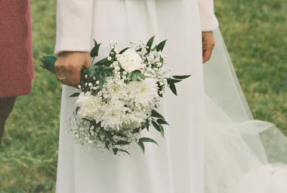
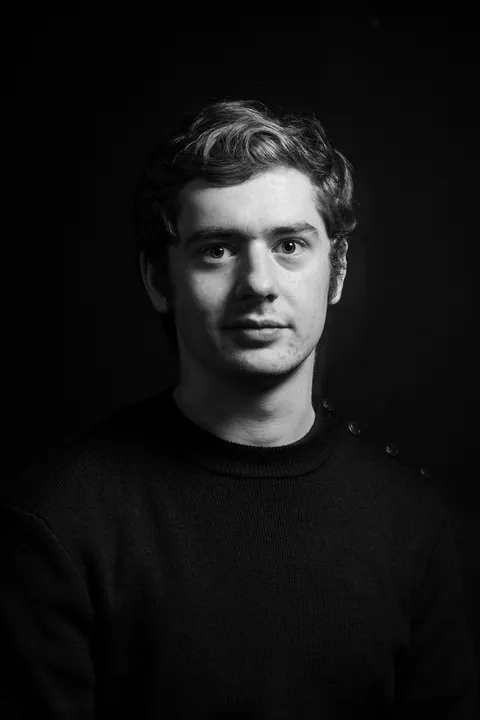

Thomas Soleil · Photographe à Toulouse & Castres
Les jours
qui comptent.
Mariage & événements
Couple & famille

Votre histoire,
en images.
Un mariage, un événement ou un moment à deux : mon envie est de photographier ce que vous partagez, avec discrétion.
Mon approche


Derrière l’objectif
Thomas Soleil.
Je m’appelle Thomas. Entre Toulouse et Castres, je développe mes projets photographiques autour du mariage et des moments partagés avec vos proches.
Je souhaite vous accompagner avec discrétion, en laissant de la place aux instants spontanés. Nous prenons le temps d’échanger sur votre journée et les images qui comptent pour vous.